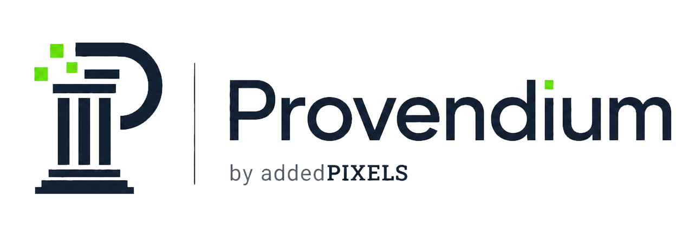

The Province-level layer,
quietly done properly.
Provendium is the operational platform that sits between a Masonic Province and the work it actually does day-to-day: the diary, the role assignments, the RSVPs, the embeds on Lodge websites, the Almoner's casework, the festive board headcounts. None of that lives in any one place at the moment. The brief is to give it one — built for the role, owned by the Provinces, and open source so it doesn't disappear if we do.

It runs on spreadsheets, intranet pages and expiring plugins.
The day-to-day operation of a Province is more elaborate than people outside it tend to assume. There are calendars to maintain across half a dozen audiences. Provincial officers are assigned to Lodge visits and need to be told well in advance. RSVPs have to be chased. Clashes get spotted by whoever happens to notice. The diary is then embedded on the official Province site, individual Lodge sites, and read into each Brother's personal calendar.
Today, that work tends to be held together with intranet pages, third-party calendar embeds, spreadsheets, mailbox reminders, and the long-running patience of the Provincial Office. Several of the underlying pieces are reaching end-of-life — vendor plugins sunsetting, alert systems being withdrawn — so something has to replace them anyway.
The brief was to build the thing that should have existed: a Province-level platform that models the work the Province actually does, leaves the national membership register alone, and is shaped by the people who use it.
An operational platform for a Province, not a register of its Brethren.
UGLE keeps the authoritative national record of every Freemason in England & Wales. Provendium doesn't try to be that. It's the layer above the register — the part the Province lives in day-to-day, which the national systems don't address.
Phase 1, in plain English.
Calendar & diary
Multiple calendars per Province, cross-posted, filtered, colour-coded by event type. The diary feeds embeds, iCal subscriptions and personal feeds.
- Multi-calendar
- iCal feeds
- Conflict detection
Officers & roles
The Province's role-holder register. Assign the Prov DC, an APGM, the Almoner to a specific Lodge visit. Acting officers self-update; the Provincial Office tops up via CSV.
- Role assignment
- Precedence rules
- Acting officers
RSVPs by magic link
The assignment email contains three signed URLs — confirm, maybe, decline. One click. No login screen. The Provincial Office can see at a glance who's coming.
- Signed URLs
- No login required
- Audit logged
Notifications, properly
Email and SMS, queued through a real worker (not cron), respecting quiet hours, with per-recipient lead times of 14/7/1 day. SMS at midnight does not happen.
- 14 / 7 / 1 day lead times
- Quiet hours per tenant
- Late-assignment alerts
Embeddable widget
A small JS bundle that puts the relevant slice of the Provincial diary onto any Lodge website, with a signed token and a domain allowlist. Caches at the edge.
- ~30 KB bundle
- Token-gated
- Cloudflare-cached
Identity & 2FA
Local accounts in pilot, with TOTP, recovery codes and email OTP fallback. Designed for OIDC swap-in later (Authentik, or wherever a Province lands).
- TOTP + recovery codes
- OIDC-ready
- Role-based access
Almoner casework
Confidential welfare casework at Province level. Field-level encryption, audit trail, strict access. Never visible outside the Province.
- Encrypted PII
- Province-only access
- Audit log
Returns & identity
CSV imports from UGLE's central systems so Brother records share a stable identifier. Lodge and Chapter returns, P-forms, and GL certificates as separate workflows.
- CSV imports
- Returns
- Registrations
Comms, dining, governance
Provincial newsletters, festive board headcounts with dietary requirements, document library, and an audit log for Provincial committee business.
- Newsletters
- Festive board
- Documents
UGLE owns the records. Provendium owns the work.
It would be a mistake to build a parallel register of who is a Freemason. UGLE already does that, nationally, with proper systems behind it. Provendium treats whatever UGLE provides as the upstream source of truth for Brother identity and stops there.
What's left over — the diary, the role assignments, the RSVPs, the embeds, the Almoner work, the dining sheets — is the operational layer the Province lives in. That's Provendium's job, and only that.
The bar is set high, on purpose.
Provendium holds the operational and personal data of an English Masonic Province — and, at scale, several of them. That comes with three commitments which sit above any individual feature decision.
Data does not leak.
Field-level encryption from the first PII migration. Tenant scoping at both the application and database layer. Logs and error trackers PII-scrubbed at source. Tests that assert the response body does not contain plaintext if the caller isn't authorised. Subject Access Request and Right to Erasure work from day one.
Downtime does not happen.
No business logic on cron — only the scheduler tick. Real queue infrastructure with retries, dead-letter, and a dashboard. Transactional writes. Idempotent external calls. Cache-stampede protection on calendar feeds. Backups verified by monthly restore drill. Migrations that have a reverse, tested in CI.
It cannot be hard to use.
Primary users are 40–80 with mixed digital literacy. Lighthouse accessibility score ≥95 is a CI gate, not an aspiration. Tap targets ≥44px, WCAG AA contrast minimum, plain English throughout. Every feature is tested with someone outside the build before it's called done.
Boring technology, deliberately.
Every choice was scored on the five-year reading-from-now, not on novelty. Anything new gets the side-project sandbox; production gets things that already work everywhere.
Backend
- Laravel 11 (PHP 8.3)
- Inertia.js for the SPA shell
- Sanctum for SPA + API auth
- Modular monolith, not microservices
Data
- PostgreSQL 16
- Row-level security per tenant
- tstzrange + gist for conflict detection
- jsonb for per-tenant configuration
UI
- React 18 + Tailwind
- shadcn/ui (code we own, not a dep)
- Vite
- Lighthouse a11y ≥ 95 as a CI gate
Background
- Redis + Laravel Horizon
- Named queues, retries, dead-letter
- Time-windowed notifications
- No business logic on cron
Services
- SMTP-first, driver-agnostic email
- Twilio for SMS (behind a per-tenant flag)
- Cloudflare R2 for documents
- Stripe for billing — Phase 2, not pilot
Operations
- Hetzner VPS, existing fleet
- Docker Compose
- Cloudflare for DNS, CDN, WAF, TLS
- Sentry, Pulse, Grafana
Open source, so it doesn't disappear.
The codebase is AGPL-3.0, public on GitHub. The Province asked for that, and we agreed in the room. A single developer is a single point of failure; an open-source repo with proper documentation, decision records and contributor guidance is the only honest mitigation.
AGPL keeps the bargain symmetric: anyone is free to run it, fork it, modify it. If they run a modified version as a service to others, those modifications come back to the commons. We're not building a private moat at the Province's expense.
For Provinces that need a hosted offering, addedPIXELS will run it. For Provinces that want to self-host, the code is yours.
One Province on board. A pilot underway. Production by September.
Cheshire is the first Province to back the work. The pilot runs through close season; the test group is feeding back through GitHub issues; the production-ready version is targeted for the 1st of September 2026, to land in time for the Province to leave Elfsight and SharePoint behind.
Other Provinces are welcome to follow. The model is the same — Provendium is multi-tenant from day one, designed for the 47 English & Welsh Provinces and any jurisdiction beyond that wants the same things. There's no charging during pilot, and a small annual licence later for Provinces that want the hosted version.
If you're a Province looking at the same problem and wondering whether there's another way to solve it, we'd be glad to compare notes.